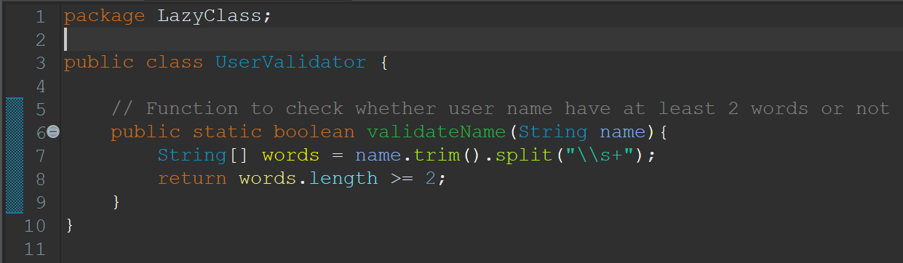
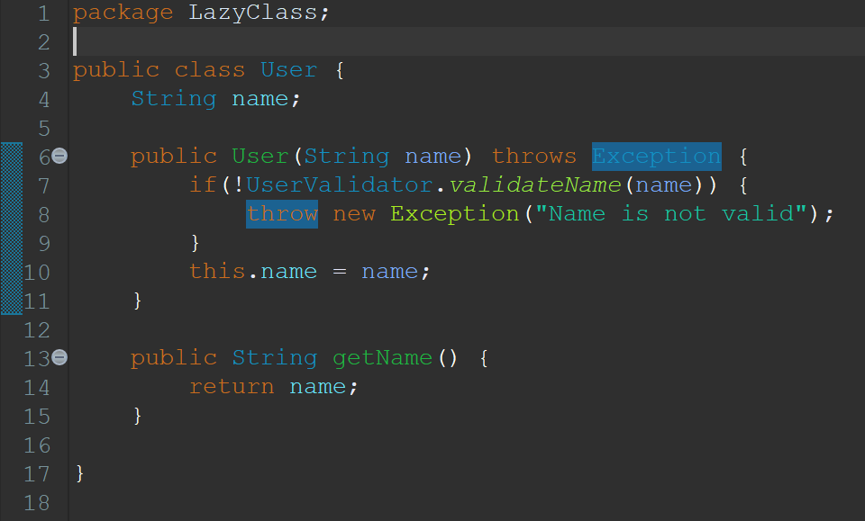
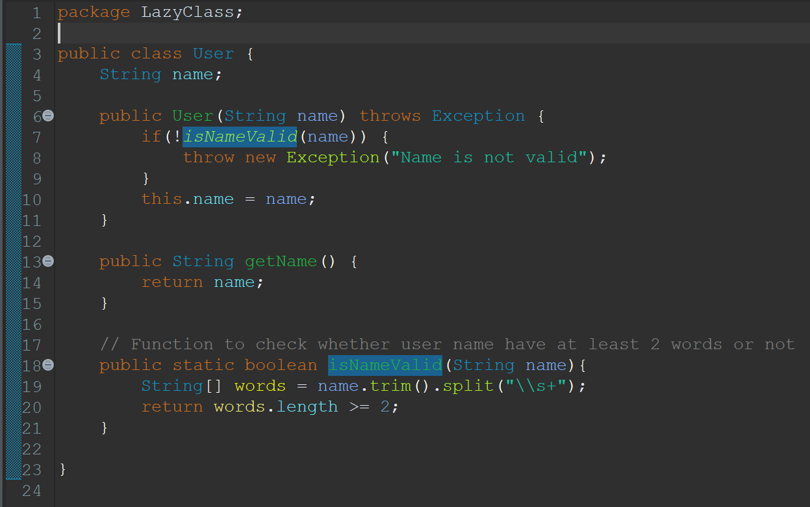

Lazy Class
Definisi
Lazy Class adalah sebuah code smell yang terjadi ketika ada satu class yang berisi fungsi atau metode yang sangat sedikit sehingga hal ini menyebabkan kepentingan atau esensi class yang dipertanyakan.
Contoh
Before
Code:
UserValidator.java
User.java
Alasan:
Class 'UserValidator' hanya berisi function 'validateName()' yang berfungsi untuk mengvalidasi apakah nama dari user setidaknya memiliki 2 kata atau tidak.
After
Code:
User.java
Hasil Perbaikan:
Maka dari itu, kita dapat menggunakan teknik 'Move Method' untuk memindahkan method 'validateName()' ke class 'User' dan melakukan perubahan nama method menjadi 'isNameValid()' supaya lebih sesuai dengan class 'User'. Setelah itu, kita dapat menghapus class 'UserValidator'.